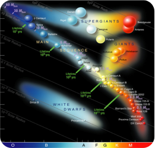

Когато звезда от главната последователност под осем слънчеви маси изчерпи водород в ядрото си, тя колабира поради гравитацията, повишавайки температурата и налягането. Сливането на хелий във въглерод освобождава енергия, причинявайки сливането на водорода да разширява външните слоеве, образувайки червен гигант. Тези червени гиганти често изглеждат оранжеви. Те стават нестабилни, пулсират и изхвърлят атмосферата си, като в крайна сметка разпръскват външните си слоеве като планетарна мъглявина. Нашето Слънце ще се превърне в червен гигант след около 5 милиарда години.
Видове звезди
Вселената е изпълнена с удивително разнообразие от звезди, всяка от които притежава уникални характеристики, които ги отличават една от друга. Звездите се различават значително по отношение на тяхната яркост, размер, цвят и поведение. Някои видове се превръщат в други много бързо, докато други остават относително непроменени в продължение на трилиони години.
